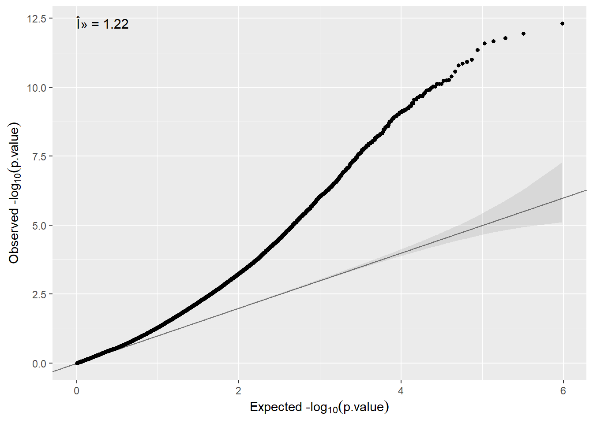

12 Omic data analysis
In this part we will provide some real data anlyses of omic data including transcriptomic, epigenomic and genomic data that covers how to perform three of the widely used data analyses: differential gene expression (DGE), epigenome-wide association (EWAS) and genome-wide association (GWAS) analyses. We provide examples of how to perform data analyses using Bioconductor packages. For genomic data we also illustrate how to carry out analyses using PLINK.
12.1 Types of analyses implemented
The Figure 12.1 describes the different types of omic association analyses that can be performed using DataSHIELD client functions implemented in the dsOmicsClient package. Basically, data (omic and phenotypes/covariates) can be stored in different sites (http, ssh, AWS S3, local, …) and are managed with Opal through the resourcer package and their extensions implemented in dsOmics.
Figure 12.1: Non-disclosive omic data analysis with DataSHIELD and Bioconductor. The figure illustrates how the resourcer package is used to get access to omic data through the Opal servers. Then DataSHIELD is used in the client side to perform non-disclosive data analyses.

Then, dsOmicsClient package allows different types of analyses: pooled and meta-analysis. Both methods are based on fitting different generalized linear models (GLMs) for each feature when assesing association between omic data and the phenotype/trait/condition of interest. Of course non-disclosive omic data analysis from a single study can also be performed.
The pooled approach (Figure 12.2) is recommended when the user wants to analyze omic data from different sources and obtain results as if the data were located in a single computer. It should be noticed that this can be very time consuming when analyzing multiple features since it calls repeatedly to a base function in DataSHIELD (ds.glm) and that it cannot be recommended when data are not properly harmonized (e.g. gene expression normalized using different methods, GWAS data having different platforms, …). Also when it is necesary to remove unwanted variability (for transcriptomic and epigenomica analysis) or control for population stratification (for GWAS analysis), this approach cannot be used since we need to develop methods to compute surrogate variables (to remove unwanted variability) or PCAs (to to address population stratification) in a non-disclosive way.
The meta-analysis approach Figure 12.3 overcomes the limitations raised when performing pooled analyses. First, the computation issue is addressed by using scalable and fast methods to perform data analysis at whole-genome level at each server. The transcriptomic and epigenomic data analyses make use of the widely used limma package that uses ExpressionSet or RangedSummarizedExperiment Bioc infrastructures to deal with omic and phenotypic (e.g covariates). The genomic data are analyzed using GWASTools and GENESIS that are designed to perform quality control (QC) and GWAS using GDS infrastructure.
Next, we describe how both approaches are implemented:
- Pooled approach: Figure 12.2 illustrate how this analysis is performed. This corresponds to generalized linear models (glm) on data from single or multiple sources. It makes use of
ds.glm()function which is a DataSHIELD function that uses an approach that is mathematically equivalent to placing all individual-level data froma all sources in one central warehouse and analysing those data using the conventionalglm()function in R. The user can select one (or multiple) features (i.e., genes, transcripts, CpGs, SNPs, …)
Figure 12.2: Non-disclosive omic data analysis with DataSHIELD and Bioconductor. The figure illustrates how to perform single pooled omic data analysis. The analyses are performed by using a generalized linear model (glm) on data from one or multiple sources. It makes use of ds.glm(), a DataSHIELD function, that uses an approach that is mathematically equivalent to placing all individual-level data from all sources in one central warehouse and analysing those data using the conventional glm() function in R.
![Non-disclosive omic data analysis with DataSHIELD and Bioconductor. The figure illustrates how to perform single pooled omic data analysis. The analyses are performed by using a generalized linear model (glm) on data from one or multiple sources. It makes use of `ds.glm()`, a DataSHIELD function, that uses an approach that is mathematically equivalent to placing all individual-level data from all sources in one central warehouse and analysing those data using the conventional `glm()` function in R.](fig/dsOmics_B.jpg)
- Meta-analysis: Figure 12.3 illustrate how this analysis is performed. This corresponds to perform a genome-wide analysis at each server using functions that are specifically design to that purpose and that are scalable. Then the results of each server can be meta-analyzed using method that meta-analyze either effects or p-values.
Figure 12.3: Non-disclosive omic data analysis with DataSHIELD and Bioconductor. The figure illustrates how to perform anlyses at genome-wide level from one or multiple sources. It runs standard Bioconductor functions at each server independently to speed up the analyses and in the case of having multiple sources, results can be meta-analyzed uning standar R functions.

12.2 Differential gene expression (DGE) analysis
Let us start by illustrating a simple example where a researcher may be interested in perfoming differential gene expression anaylis (DGE) having data in a single repository (e.g. one study). To this end, we will use bulk transcriptomic data from TCGA project. We have uploaded to the opal server a resource called tcga_liver whose URL is http://duffel.rail.bio/recount/TCGA/rse_gene_liver.Rdata which is available through the recount project. This resource contains the RangeSummarizedExperiment with the RNAseq profiling of liver cancer data from TCGA. Next, we illustrate how a differential expression analysis to compare RNAseq profiling of women vs men (variable gdc_cases.demographic.gender). The DGE analysis is normally performed using limma package. In that case, as we are analyzing RNA-seq data, limma + voom method will be required.
Let us start by creating the connection to the opal server:
builder <- newDSLoginBuilder()
builder$append(server = "study1", url = "https://opal-demo.obiba.org",
user = "dsuser", password = "password",
resource = "RSRC.tcga_liver", driver = "OpalDriver")
logindata <- builder$build()
conns <- datashield.login(logins = logindata, assign = TRUE,
symbol = "res")Then, let us coerce the resource to a RangedSummarizedExperiment which is the type of object that is available in the recount project.
datashield.assign.expr(conns, symbol = "rse",
expr = quote(as.resource.object(res)))
ds.class("rse")$study1
[1] "RangedSummarizedExperiment"
attr(,"package")
[1] "SummarizedExperiment"The number of features and samples can be inspected by
$`dimensions of rse in study1`
[1] 58037 424
$`dimensions of rse in combined studies`
[1] 58037 424And the names of the features using the same function used in the case of analyzing an ExpressionSet
$study1
[1] "ENSG00000000003.14" "ENSG00000000005.5" "ENSG00000000419.12" "ENSG00000000457.13" "ENSG00000000460.16" "ENSG00000000938.12"Also the covariate names can be inspected by
$study1
[1] "project" "sample"
[3] "experiment" "run"
[5] "read_count_as_reported_by_sra" "reads_downloaded"
[7] "proportion_of_reads_reported_by_sra_downloaded" "paired_end"
[9] "sra_misreported_paired_end" "mapped_read_count"
[11] "auc" "sharq_beta_tissue"
[13] "sharq_beta_cell_type" "biosample_submission_date"
[15] "biosample_publication_date" We can visualize the levels of the variable having gender information
Data in all studies were valid
Study 1 : No errors reported from this study$output.list
$output.list$TABLE_rvar.by.study_row.props
study
rse$gdc_cases.demographic.gender 1
female 1
male 1
$output.list$TABLE_rvar.by.study_col.props
study
rse$gdc_cases.demographic.gender 1
female 0.3372642
male 0.6627358
$output.list$TABLE_rvar.by.study_counts
study
rse$gdc_cases.demographic.gender 1
female 143
male 281
$output.list$TABLES.COMBINED_all.sources_proportions
rse$gdc_cases.demographic.gender
female male
0.337 0.663
$output.list$TABLES.COMBINED_all.sources_counts
rse$gdc_cases.demographic.gender
female male
143 281
$validity.message
[1] "Data in all studies were valid"The differential expression analysis is then performed by:
ans.gender <- ds.limma(model = ~ gdc_cases.demographic.gender,
Set = "rse", type.data = "RNAseq",
sva = FALSE)Notice that we have set type.data='RNAseq' to consider that our data are counts obtained from a RNA-seq experiment. By indicating so, the differential analysis is performed by using voom + limma as previously mention.
The top differentially expressed genes can be visualized by:
$study1
# A tibble: 58,037 x 10
id logFC CI.L CI.R AveExpr t P.Value adj.P.Val B SE
<chr> <dbl> <dbl> <dbl> <dbl> <dbl> <dbl> <dbl> <dbl> <dbl>
1 ENSG00000233070.1 10.9 10.5 11.3 -5.59 53.6 7.05e-191 4.09e-186 402. 0.0761
2 ENSG00000213318.4 11.4 10.9 11.8 -4.35 49.4 5.93e-178 1.72e-173 376. 0.462
3 ENSG00000067048.16 9.63 9.24 10.0 0.856 47.9 5.05e-173 9.78e-169 366. 0.0608
4 ENSG00000260197.1 10.2 9.76 10.6 -5.88 46.3 5.27e-168 7.65e-164 355. 0.0654
5 ENSG00000012817.15 11.3 10.8 11.8 -0.226 44.7 1.29e-162 1.50e-158 344. 0.0880
6 ENSG00000131002.11 11.4 10.9 11.9 -1.10 44.5 7.80e-162 7.55e-158 343. 0.120
7 ENSG00000198692.9 12.3 11.8 12.9 -0.882 44.4 1.62e-161 1.34e-157 342. 0.129
8 ENSG00000183878.15 8.66 8.27 9.05 -0.781 43.9 9.83e-160 7.13e-156 338. 0.0813
9 ENSG00000129824.15 11.4 10.8 11.9 2.37 43.3 1.44e-157 9.29e-154 334. 0.0896
10 ENSG00000274655.1 -12.4 -12.9 -11.8 -7.71 -43.1 5.20e-157 3.02e-153 333. 0.0931
# ... with 58,027 more rows
attr(,"class")
[1] "dsLimma" "list" As usual, we close the DataSHIELD session by:
12.3 Epigenome-wide association analysis (EWAS)
EWAS requires basically the same statistical methods as those used in DGE. It should be notice that the pooled analysis we are going to illustrate here can also be performed with transcriptomic data since each study must have different range values. If so, gene expression harmonization should be performed, for instance, by standardizing the data at each study. For EWAS where methylation is measured using beta values (e.g CpG data are in the range 0-1) this is not a problem. In any case, adopting the meta-analysis approach could be a safe option.
We have downloaded data from GEO corresponding to the accesion number GSE66351 which includes DNA methylation profiling (Illumina 450K array) of 190 individuals. Data corresponds to CpGs beta values measured in the superior temporal gyrus and prefrontal cortex brain regions of patients with Alzheimer’s. Data have been downloaded using GEOquery package that gets GEO data as ExpressionSet objects. Researchers who are not familiar with ExpressionSets can read this Section. Notice that data are encoded as beta-values that ensure data harmonization across studies.
In order to illustrate how to perform data analyses using federated data, we have split the data into two ExpressionSets having 100 and 90 samples as if they were two different studies. Figure 6.2 shows the two resources defined for both studies (GSE66351_1 and GSE66351_2)
In order to perform omic data analyses, we need first to login and assign resources to DataSHIELD. This can be performed using the as.resource.object() function
builder <- DSI::newDSLoginBuilder()
builder$append(server = "study1", url = "https://opal-demo.obiba.org",
user = "dsuser", password = "password",
resource = "RSRC.GSE66351_1", driver = "OpalDriver")
builder$append(server = "study2", url = "https://opal-demo.obiba.org",
user = "dsuser", password = "password",
resource = "RSRC.GSE66351_2", driver = "OpalDriver")
logindata <- builder$build()
conns <- DSI::datashield.login(logins = logindata, assign = TRUE,
symbol = "res")
# Assign to the original R class (e.g ExpressionSet)
datashield.assign.expr(conns, symbol = "methy",
expr = quote(as.resource.object(res)))Now, we can see that the resources are actually loaded into the R servers as their original class
$study1
[1] "ExpressionSet"
attr(,"package")
[1] "Biobase"
$study2
[1] "ExpressionSet"
attr(,"package")
[1] "Biobase"Then, some Bioconductor-type functions can be use to return non-disclosive information of ExpressionSets from each server to the client, using similar functions as those defined in the dsBaseClient package. For example, feature names can be returned by
$study1
[1] "cg00000029" "cg00000108" "cg00000109" "cg00000165" "cg00000236" "cg00000289"
$study2
[1] "cg00000029" "cg00000108" "cg00000109" "cg00000165" "cg00000236" "cg00000289"Experimental phenotypes variables can be obtained by
$study1
[1] "title" "geo_accession" "status" "submission_date" "last_update_date"
[6] "type" "channel_count" "source_name_ch1" "organism_ch1" "characteristics_ch1"
[11] "characteristics_ch1.1" "characteristics_ch1.2" "characteristics_ch1.3" "characteristics_ch1.4" "characteristics_ch1.5"
[16] "characteristics_ch1.6" "characteristics_ch1.7" "characteristics_ch1.8" "molecule_ch1" "extract_protocol_ch1"
[21] "label_ch1" "label_protocol_ch1" "taxid_ch1" "hyb_protocol" "scan_protocol"
[26] "description" "data_processing" "platform_id" "contact_name" "contact_email"
[31] "contact_phone" "contact_laboratory" "contact_institute" "contact_address" "contact_city"
[36] "contact_zip/postal_code" "contact_country" "supplementary_file" "supplementary_file.1" "data_row_count"
[41] "age" "braak_stage" "brain_region" "cell type" "diagnosis"
[46] "donor_id" "sentrix_id" "sentrix_position" "Sex"
$study2
[1] "title" "geo_accession" "status" "submission_date" "last_update_date"
[6] "type" "channel_count" "source_name_ch1" "organism_ch1" "characteristics_ch1"
[11] "characteristics_ch1.1" "characteristics_ch1.2" "characteristics_ch1.3" "characteristics_ch1.4" "characteristics_ch1.5"
[16] "characteristics_ch1.6" "characteristics_ch1.7" "characteristics_ch1.8" "molecule_ch1" "extract_protocol_ch1"
[21] "label_ch1" "label_protocol_ch1" "taxid_ch1" "hyb_protocol" "scan_protocol"
[26] "description" "data_processing" "platform_id" "contact_name" "contact_email"
[31] "contact_phone" "contact_laboratory" "contact_institute" "contact_address" "contact_city"
[36] "contact_zip/postal_code" "contact_country" "supplementary_file" "supplementary_file.1" "data_row_count"
[41] "age" "braak_stage" "brain_region" "cell type" "diagnosis"
[46] "donor_id" "sentrix_id" "sentrix_position" "Sex"
attr(,"class")
[1] "dsvarLabels" "list" 12.3.1 Single CpG analysis
Once the methylation data have been loaded into the opal server, we can perform different type of analyses using functions from the dsOmicsClient package. Let us start by illustrating how to analyze a single CpG from two studies by using an approach that is mathematically equivalent to placing all individual-level.
ans <- ds.lmFeature(feature = "cg07363416",
model = ~ diagnosis + Sex,
Set = "methy",
datasources = conns)
ans Estimate Std. Error p-value
cg07363416 0.03459886 0.02504291 0.1670998
attr(,"class")
[1] "dsLmFeature" "matrix" "array" 12.3.2 Multiple CpG analysis
The same analysis can be performed for all features (e.g. CpGs) just avoiding the feature argument. This process can be parallelized using mclapply function from the multicore package.
This method corresponds to the pooled analysis approach and can be very time consiming since the function repeatedly calls the DataSHIELD function ds.glm(). We can adopt another strategy that is to run a glm of each feature independently at each study using limma package (which is really fast) and then combine the results (i.e. meta-analysis approach).
Then, we can visualize the top genes at each study (i.e server) by
$study1
# A tibble: 6 x 10
id logFC CI.L CI.R AveExpr t P.Value adj.P.Val B SE
<chr> <dbl> <dbl> <dbl> <dbl> <dbl> <dbl> <dbl> <dbl> <dbl>
1 cg13138089 -0.147 -0.191 -0.103 0.380 -6.62 0.00000000190 0.000466 10.6 0.0122
2 cg23859635 -0.0569 -0.0741 -0.0397 0.200 -6.58 0.00000000232 0.000466 10.4 0.00520
3 cg13772815 -0.0820 -0.107 -0.0570 0.437 -6.50 0.00000000327 0.000466 10.0 0.0135
4 cg12706938 -0.0519 -0.0678 -0.0359 0.145 -6.45 0.00000000425 0.000466 9.76 0.00872
5 cg24724506 -0.0452 -0.0593 -0.0312 0.139 -6.39 0.00000000547 0.000466 9.51 0.00775
6 cg02812891 -0.125 -0.165 -0.0860 0.247 -6.33 0.00000000731 0.000466 9.23 0.0163
$study2
# A tibble: 6 x 10
id logFC CI.L CI.R AveExpr t P.Value adj.P.Val B SE
<chr> <dbl> <dbl> <dbl> <dbl> <dbl> <dbl> <dbl> <dbl> <dbl>
1 cg04046629 -0.101 -0.135 -0.0669 0.345 -5.91 0.0000000621 0.0172 7.18 0.0128
2 cg07664323 -0.0431 -0.0577 -0.0284 0.776 -5.85 0.0000000822 0.0172 6.90 0.00390
3 cg27098804 -0.0688 -0.0924 -0.0452 0.277 -5.79 0.000000107 0.0172 6.64 0.0147
4 cg08933615 -0.0461 -0.0627 -0.0296 0.166 -5.55 0.000000298 0.0360 5.64 0.00791
5 cg18349298 -0.0491 -0.0671 -0.0311 0.157 -5.42 0.000000507 0.0489 5.12 0.00848
6 cg02182795 -0.0199 -0.0272 -0.0125 0.0947 -5.36 0.000000670 0.0538 4.84 0.0155 The annotation can be added by using the argument annotCols. It should be a vector with the columns of the annotation available in the ExpressionSet or RangedSummarizedExperiment that want to be showed. The columns of the annotation can be obtained by
$study1
[1] "ID" "Name" "AddressA_ID" "AlleleA_ProbeSeq"
[5] "AddressB_ID" "AlleleB_ProbeSeq" "Infinium_Design_Type" "Next_Base"
[9] "Color_Channel" "Forward_Sequence" "Genome_Build" "CHR"
[13] "MAPINFO" "SourceSeq" "Chromosome_36" "Coordinate_36"
[17] "Strand" "Probe_SNPs" "Probe_SNPs_10" "Random_Loci"
[21] "Methyl27_Loci" "UCSC_RefGene_Name" "UCSC_RefGene_Accession" "UCSC_RefGene_Group"
[25] "UCSC_CpG_Islands_Name" "Relation_to_UCSC_CpG_Island" "Phantom" "DMR"
[29] "Enhancer" "HMM_Island" "Regulatory_Feature_Name" "Regulatory_Feature_Group"
[33] "DHS" "RANGE_START" "RANGE_END" "RANGE_GB"
[37] "SPOT_ID"
$study2
[1] "ID" "Name" "AddressA_ID" "AlleleA_ProbeSeq"
[5] "AddressB_ID" "AlleleB_ProbeSeq" "Infinium_Design_Type" "Next_Base"
[9] "Color_Channel" "Forward_Sequence" "Genome_Build" "CHR"
[13] "MAPINFO" "SourceSeq" "Chromosome_36" "Coordinate_36"
[17] "Strand" "Probe_SNPs" "Probe_SNPs_10" "Random_Loci"
[21] "Methyl27_Loci" "UCSC_RefGene_Name" "UCSC_RefGene_Accession" "UCSC_RefGene_Group"
[25] "UCSC_CpG_Islands_Name" "Relation_to_UCSC_CpG_Island" "Phantom" "DMR"
[29] "Enhancer" "HMM_Island" "Regulatory_Feature_Name" "Regulatory_Feature_Group"
[33] "DHS" "RANGE_START" "RANGE_END" "RANGE_GB"
[37] "SPOT_ID"
attr(,"class")
[1] "dsfvarLabels" "list" Then we can run the analysis and obtain the output with the chromosome and gene symbol by:
ans.limma.annot <- ds.limma(model = ~ diagnosis + Sex,
Set = "methy",
annotCols = c("CHR", "UCSC_RefGene_Name"),
datasources = conns)$study1
# A tibble: 6 x 12
id CHR UCSC_RefGene_Name logFC CI.L CI.R AveExpr t P.Value adj.P.Val B SE
<chr> <chr> <chr> <dbl> <dbl> <dbl> <dbl> <dbl> <dbl> <dbl> <dbl> <dbl>
1 cg13138089 2 "ECEL1P2" -0.147 -0.191 -0.103 0.380 -6.62 0.00000000190 0.000466 10.6 0.0122
2 cg23859635 2 "MTA3" -0.0569 -0.0741 -0.0397 0.200 -6.58 0.00000000232 0.000466 10.4 0.00520
3 cg13772815 17 "" -0.0820 -0.107 -0.0570 0.437 -6.50 0.00000000327 0.000466 10.0 0.0135
4 cg12706938 19 "MEX3D" -0.0519 -0.0678 -0.0359 0.145 -6.45 0.00000000425 0.000466 9.76 0.00872
5 cg24724506 19 "ISOC2;ISOC2;ISOC2" -0.0452 -0.0593 -0.0312 0.139 -6.39 0.00000000547 0.000466 9.51 0.00775
6 cg02812891 2 "ECEL1P2" -0.125 -0.165 -0.0860 0.247 -6.33 0.00000000731 0.000466 9.23 0.0163
$study2
# A tibble: 6 x 12
id CHR UCSC_RefGene_Name logFC CI.L CI.R AveExpr t P.Value adj.P.Val B SE
<chr> <chr> <chr> <dbl> <dbl> <dbl> <dbl> <dbl> <dbl> <dbl> <dbl> <dbl>
1 cg04046629 11 "CD6" -0.101 -0.135 -0.0669 0.345 -5.91 0.0000000621 0.0172 7.18 0.0128
2 cg07664323 6 "MUC21" -0.0431 -0.0577 -0.0284 0.776 -5.85 0.0000000822 0.0172 6.90 0.00390
3 cg27098804 11 "CD6" -0.0688 -0.0924 -0.0452 0.277 -5.79 0.000000107 0.0172 6.64 0.0147
4 cg08933615 1 "" -0.0461 -0.0627 -0.0296 0.166 -5.55 0.000000298 0.0360 5.64 0.00791
5 cg18349298 3 "RARRES1;RARRES1" -0.0491 -0.0671 -0.0311 0.157 -5.42 0.000000507 0.0489 5.12 0.00848
6 cg02182795 8 "" -0.0199 -0.0272 -0.0125 0.0947 -5.36 0.000000670 0.0538 4.84 0.0155 Then, the last step is to meta-analyze the results. Different methods can be used to this end. We have implemented a method that meta-analyze the p-pvalues of each study as follows:
# A tibble: 481,868 x 4
id study1 study2 p.meta
<chr> <dbl> <dbl> <dbl>
1 cg13138089 0.00000000190 0.00000763 4.78e-13
2 cg25317941 0.0000000179 0.00000196 1.12e-12
3 cg02812891 0.00000000731 0.00000707 1.63e-12
4 cg12706938 0.00000000425 0.0000161 2.14e-12
5 cg16026647 0.000000101 0.000000797 2.51e-12
6 cg12695465 0.00000000985 0.0000144 4.33e-12
7 cg21171625 0.000000146 0.00000225 9.78e-12
8 cg13772815 0.00000000327 0.000122 1.18e-11
9 cg00228891 0.000000166 0.00000283 1.38e-11
10 cg21488617 0.0000000186 0.0000299 1.62e-11
# ... with 481,858 more rowsThis is a genreal method that can be used … We can verify that the results are pretty similar to those obtained using pooled analyses. Here we compute the association for two of the top-CpGs:
res1 <- ds.lmFeature(feature = "cg13138089",
model = ~ diagnosis + Sex,
Set = "methy",
datasources = conns)
res1 Estimate Std. Error p-value
cg13138089 -0.1373348 0.01712405 1.057482e-15
attr(,"class")
[1] "dsLmFeature" "matrix" "array" res2 <- ds.lmFeature(feature = "cg13772815",
model = ~ diagnosis + Sex,
Set = "methy",
datasources = conns)
res2 Estimate Std. Error p-value
cg13772815 -0.06786137 0.009128915 1.056225e-13
attr(,"class")
[1] "dsLmFeature" "matrix" "array" We can create a QQ-plot by using the function qqplot available in our package.

Here we see inflation, so that, correction for cell-type or surrogate variables must be performed. We describe how we can do that in the next two sections.
12.3.3 Adjusting for Surrogate Variables
The vast majority of omic studies require to control for unwanted variability. The surrogate variable analysis (SVA) can address this issue by estimating some hidden covariates that capture differences across individuals due to some artifacts such as batch effects or sample quality among others. The method is implemented in SVA package.
Performing this type of analysis using the ds.lmFeature function is not allowed since estimating SVA would require to implement a non-disclosive method that computes SVA from the different servers. This will be a future topic of the dsOmicsClient. NOTE that, estimating SVA separately at each server would not be a good idea since the aim of SVA is to capture differences mainly due to experimental issues among ALL individuals. What we can do instead is to use the ds.limma function to perform the analyses adjusted for SVA at each study.
ans.sva <- ds.limma(model = ~ diagnosis + Sex,
Set = "methy",
sva = TRUE, annotCols = c("CHR", "UCSC_RefGene_Name"))
ans.sva$study1
# A tibble: 481,868 x 12
id CHR UCSC_RefGene_Name logFC CI.L CI.R AveExpr t P.Value adj.P.Val B SE
<chr> <chr> <chr> <dbl> <dbl> <dbl> <dbl> <dbl> <dbl> <dbl> <dbl> <dbl>
1 cg10181414 19 "GNG7" -0.0547 -0.0721 -0.0373 0.338 -6.25 0.0000000131 0.00591 8.51 0.0103
2 cg13772815 17 "" -0.0569 -0.0757 -0.0381 0.437 -6.00 0.0000000391 0.00591 7.43 0.00425
3 cg11802027 19 "PODNL1;PODNL1;PODNL1" 0.0334 0.0223 0.0445 0.568 5.97 0.0000000453 0.00591 7.29 0.00897
4 cg27231068 17 "SLC47A2;SLC47A2" 0.0274 0.0182 0.0365 0.548 5.95 0.0000000491 0.00591 7.21 0.00696
5 cg21078963 6 "" -0.0453 -0.0609 -0.0297 0.799 -5.78 0.000000105 0.00666 6.46 0.00733
6 cg23859635 2 "MTA3" -0.0327 -0.0440 -0.0215 0.200 -5.77 0.000000109 0.00666 6.42 0.0149
7 cg10297473 16 "SALL1;SALL1" 0.0366 0.0240 0.0492 0.137 5.77 0.000000110 0.00666 6.42 0.00688
8 cg24924572 1 "" 0.0317 0.0208 0.0427 0.821 5.76 0.000000111 0.00666 6.41 0.00969
9 cg13663116 9 "" -0.0326 -0.0440 -0.0213 0.367 -5.72 0.000000132 0.00705 6.24 0.00562
10 cg13138089 2 "ECEL1P2" -0.106 -0.144 -0.0686 0.380 -5.61 0.000000215 0.00835 5.76 0.00137
# ... with 481,858 more rows
$study2
# A tibble: 481,868 x 12
id CHR UCSC_RefGene_Name logFC CI.L CI.R AveExpr t P.Value adj.P.Val B SE
<chr> <chr> <chr> <dbl> <dbl> <dbl> <dbl> <dbl> <dbl> <dbl> <dbl> <dbl>
1 cg16766632 12 "LRP1" -0.0418 -0.0548 -0.0289 0.388 -6.42 0.00000000782 0.00374 9.05 0.00917
2 cg25036710 1 "" -0.0664 -0.0874 -0.0453 0.569 -6.27 0.0000000155 0.00374 8.37 0.00373
3 cg12938128 11 "NRXN2;NRXN2" -0.0273 -0.0367 -0.0179 0.728 -5.81 0.000000113 0.0149 6.42 0.00901
4 cg07349815 3 "" -0.0393 -0.0529 -0.0258 0.160 -5.78 0.000000124 0.0149 6.32 0.00737
5 cg07664323 6 "MUC21" -0.0427 -0.0579 -0.0276 0.776 -5.61 0.000000263 0.0163 5.59 0.00682
6 cg00228891 1 "CR1L" -0.0568 -0.0771 -0.0365 0.350 -5.56 0.000000318 0.0163 5.40 0.0139
7 cg11743675 12 "CNTN1;CNTN1" -0.0443 -0.0601 -0.0284 0.152 -5.56 0.000000318 0.0163 5.40 0.00786
8 cg03470754 7 "PGAM2;PGAM2" -0.0442 -0.0600 -0.0283 0.211 -5.56 0.000000326 0.0163 5.38 0.00790
9 cg07015749 1 "KCNAB2;KCNAB2" 0.0611 0.0392 0.0831 0.659 5.54 0.000000347 0.0163 5.31 0.00469
10 cg25647784 17 "WNK4" -0.0392 -0.0533 -0.0251 0.512 -5.52 0.000000370 0.0163 5.25 0.00157
# ... with 481,858 more rows
attr(,"class")
[1] "dsLimma" "list" Then, data can be combined meta-anlyzed as follows:
# A tibble: 481,868 x 4
id study1 study2 p.meta
<chr> <dbl> <dbl> <dbl>
1 cg00228891 0.00000397 0.000000318 3.58e-11
2 cg01301319 0.00000609 0.00000123 2.00e-10
3 cg22962123 0.00000106 0.00000767 2.17e-10
4 cg24302412 0.0000139 0.000000762 2.77e-10
5 cg02812891 0.000000408 0.0000327 3.47e-10
6 cg23859635 0.000000109 0.000190 5.29e-10
7 cg13138089 0.000000215 0.000105 5.74e-10
8 cg24938077 0.0000125 0.00000254 8.02e-10
9 cg13772815 0.0000000391 0.00132 1.27e- 9
10 cg21212881 0.000000340 0.000248 2.04e- 9
# ... with 481,858 more rowsThe DataSHIELD session must by closed by:
12.4 GWAS with Bioconductor
We have a GWAS example available at BRGE data repository that aims to find SNPs associated with asthma. We have genomic data in a VCF file (brge.vcf) along with several covariates and phenotypes in the file brge.txt (gender, age, obesity, smoking, country and asthma status). The same data is also available in PLINK format (brge.bed, brge.bim, brge.fam) with covariates in the file brge.phe.
We have created a resource having the VCF file of our study on asthma as previously described. The name of the resource is brge_vcf the phenotypes are available in another resource called brge that is a .txt file (see 6.2).
The GWAS analysis is then perform as follows. We first start by preparing login data
builder <- newDSLoginBuilder()
builder$append(server = "study1", url = "https://opal-demo.obiba.org",
user = "dsuser", password = "password",
resource = "RSRC.brge_vcf", driver = "OpalDriver")
logindata <- builder$build()
conns <- datashield.login(logins = logindata, assign = TRUE,
symbol = "res")In this case we have to assign to different resources. One for the VCF (obesity_vcf) and another one for the phenotypic data (obesity). To this end, the datashield.assign.resource function is required before assigning any object to the specific resource. Notice that the VCF resource can be load into R as a GDS thanks to our extension of existing resources in the reourcer
datashield.assign.resource(conns, symbol = "vcf.res",
resource = list(study1 = "RSRC.brge_vcf"))
datashield.assign.expr(conns, symbol = "gds",
expr = quote(as.resource.object(vcf.res)))
datashield.assign.resource(conns, symbol = "covars.res",
resource = list(study1 = "RSRC.brge"))
datashield.assign.expr(conns, symbol = "covars",
expr = quote(as.resource.data.frame(covars.res)))These are the objects available in the Opal server
$study1
$study1$environment.searched
[1] "R_GlobalEnv"
$study1$objects.found
[1] "covars" "covars.res" "gds" "res" "vcf.res" We can use dsBaseClient functions to inspect the variables that are in the covars data.frame. The variables are
$study1
[1] "scanID" "gender" "obese" "age" "smoke" "country" "asthma" The asthma variable has this number of individuals at each level (1: controls, 2: cases)
Data in all studies were valid
Study 1 : No errors reported from this study$output.list
$output.list$TABLE_rvar.by.study_row.props
study
covars$asthma 1
0 1
1 1
$output.list$TABLE_rvar.by.study_col.props
study
covars$asthma 1
0 0.6864187
1 0.3135813
$output.list$TABLE_rvar.by.study_counts
study
covars$asthma 1
0 1587
1 725
$output.list$TABLES.COMBINED_all.sources_proportions
covars$asthma
0 1
0.686 0.314
$output.list$TABLES.COMBINED_all.sources_counts
covars$asthma
0 1
1587 725
$validity.message
[1] "Data in all studies were valid"Then, an object of class GenotypeData must be created at the server side to perform genetic data analyses. This is a container defined in the GWASTools package for storing genotype and phenotypic data from genetic association studies. By doing that we will also verify whether individuals in the GDS (e.g VCF) and covariates files have the same individuals and are in the same order. This can be performed by
The association analysis for a given SNP is performed by simply
Estimate Std. Error p-value
rs11247693 -0.1543215 0.2309585 0.5040196
attr(,"class")
[1] "dsGlmSNP" "matrix" "array" The analysis of all available SNPs is performed when the argument snps.fit is missing. The function performs the analysis of the selected SNPs in a single repository or in multiple repositories as performing pooled analyses (it uses ds.glm DataSHIELD function). As in the case of transcriptomic data, analyzing all the SNPs in the genome (e.g GWAS) will be high time-consuming. We can adopt a similar approach as the one adopted using the limma at each server. That is, we run GWAS at each repository using specific and scalable packages available in R/Bioc. In that case we use the GWASTools and GENESIS packages. The complete pipeline is implemented in this function
This close the DataSHIELD session
12.5 GWAS with PLINK
Here we illustrate how to perform the same GWAS analyses on the asthma using PLINK secure shell commands. This can be performed thanks to the posibility of having ssh resources as described here.
It is worth to notice that this workflow and the new R functions implemented in dsOmicsClient could be used as a guideline to carry out similar analyses using existing analysis tools in genomics such as IMPUTE, SAMtools or BEDtools among many others.
We start by assigning login resources
library(DSOpal)
library(dsBaseClient)
library(dsOmicsClient)
builder <- newDSLoginBuilder()
builder$append(server = "study1", url = "https://opal-demo.obiba.org",
user = "dsuser", password = "password",
resource = "RSRC.brge_plink", driver = "OpalDriver")
logindata <- builder$build()Then we assign the resource to a symbol (i.e. R object) called client which is a ssh resource
$study1
[1] "SshResourceClient" "CommandResourceClient" "ResourceClient" "R6" Now, we are ready to run any PLINK command from the client site. Notice that in this case we want to assess association between the genotype data in bed format and use as phenotype the variable ‘obese’ that is in the file ‘obesity.phe’. The sentence in a PLINK command would be (NOTE: we avoid –out to indicate the output file since the file will be available in R as a tibble).
plink --bfile obesity --assoc --pheno obesity.phe --pheno-name obese The arguments musth be encapsulated in a single character without the command ‘plink’
the analyses are then performed by
The object ans contains the PLINK results at each server as well as the outuput provided by PLINK
$study1
[1] "results" "plink.out"# A tibble: 6 x 9
CHR SNP BP A1 TEST NMISS OR STAT P
<dbl> <chr> <dbl> <chr> <chr> <dbl> <dbl> <dbl> <dbl>
1 0 MitoC3993T 3993 T ADD 2286 0.752 -1.33 0.182
2 0 MitoC3993T 3993 T gender 2286 0.742 -3.27 0.00107
3 0 MitoC3993T 3993 T age 2286 1.00 0.565 0.572
4 0 MitoG4821A 4821 A ADD 2282 2.68 1.71 0.0879
5 0 MitoG4821A 4821 A gender 2282 0.740 -3.31 0.000940
6 0 MitoG4821A 4821 A age 2282 1.00 0.465 0.642 $status
[1] 0
$output
[1] ""
[2] "@----------------------------------------------------------@"
[3] "| PLINK! | v1.07 | 10/Aug/2009 |"
[4] "|----------------------------------------------------------|"
[5] "| (C) 2009 Shaun Purcell, GNU General Public License, v2 |"
[6] "|----------------------------------------------------------|"
[7] "| For documentation, citation & bug-report instructions: |"
[8] "| http://pngu.mgh.harvard.edu/purcell/plink/ |"
[9] "@----------------------------------------------------------@"
[10] ""
[11] "Skipping web check... [ --noweb ] "
[12] "Writing this text to log file [ /tmp/ssh-2573/out.log ]"
[13] "Analysis started: Mon Sep 7 14:38:57 2020"
[14] ""
[15] "Options in effect:"
[16] "\t--bfile brge"
[17] "\t--logistic"
[18] "\t--covar brge.phe"
[19] "\t--covar-name gender,age"
[20] "\t--noweb"
[21] "\t--out /tmp/ssh-2573/out"
[22] ""
[23] "Reading map (extended format) from [ brge.bim ] "
[24] "100000 markers to be included from [ brge.bim ]"
[25] "Reading pedigree information from [ brge.fam ] "
[26] "2312 individuals read from [ brge.fam ] "
[27] "2312 individuals with nonmissing phenotypes"
[28] "Assuming a disease phenotype (1=unaff, 2=aff, 0=miss)"
[29] "Missing phenotype value is also -9"
[30] "725 cases, 1587 controls and 0 missing"
[31] "1097 males, 1215 females, and 0 of unspecified sex"
[32] "Reading genotype bitfile from [ brge.bed ] "
[33] "Detected that binary PED file is v1.00 SNP-major mode"
[34] "Reading 6 covariates from [ brge.phe ] with nonmissing values for 2199 individuals"
[35] "Selected subset of 2 from 6 covariates"
[36] "For these, nonmissing covariate values for 2312 individuals"
[37] "Before frequency and genotyping pruning, there are 100000 SNPs"
[38] "2312 founders and 0 non-founders found"
[39] "6009 heterozygous haploid genotypes; set to missing"
[40] "Writing list of heterozygous haploid genotypes to [ /tmp/ssh-2573/out.hh ]"
[41] "7 SNPs with no founder genotypes observed"
[42] "Warning, MAF set to 0 for these SNPs (see --nonfounders)"
[43] "Writing list of these SNPs to [ /tmp/ssh-2573/out.nof ]"
[44] "Total genotyping rate in remaining individuals is 0.994408"
[45] "0 SNPs failed missingness test ( GENO > 1 )"
[46] "0 SNPs failed frequency test ( MAF < 0 )"
[47] "After frequency and genotyping pruning, there are 100000 SNPs"
[48] "After filtering, 725 cases, 1587 controls and 0 missing"
[49] "After filtering, 1097 males, 1215 females, and 0 of unspecified sex"
[50] "Converting data to Individual-major format"
[51] "Writing logistic model association results to [ /tmp/ssh-2573/out.assoc.logistic ] "
[52] ""
[53] "Analysis finished: Mon Sep 7 14:40:54 2020"
[54] ""
$error
character(0)
$command
[1] "cd /home/master/brge && plink1 --bfile brge --logistic --covar brge.phe --covar-name gender,age --noweb --out /tmp/ssh-2573/out"
attr(,"class")
[1] "resource.exec"We can compare the p-values obtained using PLINK with Bioconductor-based packages for the top-10 SNPs as follows:
library(tidyverse)
# get SNP p.values (additive model - ADD)
res.plink <- ans.plink$study1$results %>% filter(TEST=="ADD") %>%
arrange(P)
# compare top-10 with Biocoductor's results
snps <- res.plink$SNP[1:10]
plink <- res.plink %>% filter(SNP%in%snps) %>% dplyr::select(SNP, P)
bioC <- ans.bioC$study1 %>% filter(rs%in%snps) %>% dplyr::select(rs, Score.pval)
left_join(plink, bioC, by=c("SNP" = "rs"))# A tibble: 10 x 3
SNP P Score.pval
<chr> <dbl> <dbl>
1 rs2267914 0.00000151 0.000000809
2 rs6097326 0.00000424 0.00000642
3 rs7153 0.00000440 0.00000508
4 rs3732410 0.00000817 0.00000940
5 rs7995146 0.0000170 0.0000195
6 rs6495788 0.0000213 0.0000278
7 rs1602679 0.0000268 0.0000264
8 rs11055608 0.0000270 0.0000161
9 rs7098143 0.0000313 0.0000214
10 rs7676164 0.0000543 0.0000537 As expected, the p-values are in the same order of magnitud having little variations due to the implemented methods of each software.
We can do the same comparions of minor allele frequency (MAF) estimation performed with Bioconductor and PLINK. To this end, we need first to estimate MAF using PLINK
plink.arguments <- "--bfile brge --freq"
ans.plink2 <- ds.PLINK("client", plink.arguments)
maf.plink <- ans.plink2$study1$results
plink <- maf.plink %>% filter(SNP%in%snps) %>% dplyr::select(SNP, MAF)
bioC <- ans.bioC$study1 %>% filter(rs%in%snps) %>% dplyr::select(rs, freq)
left_join(plink, bioC, by=c("SNP" = "rs"))# A tibble: 10 x 3
SNP MAF freq
<chr> <dbl> <dbl>
1 rs7153 0.256 0.256
2 rs3732410 0.254 0.254
3 rs7676164 0.304 0.304
4 rs1602679 0.101 0.101
5 rs7098143 0.210 0.210
6 rs11055608 0.446 0.446
7 rs7995146 0.0527 0.0527
8 rs6495788 0.267 0.267
9 rs2267914 0.104 0.104
10 rs6097326 0.125 0.125 This close the DataSHIELD session